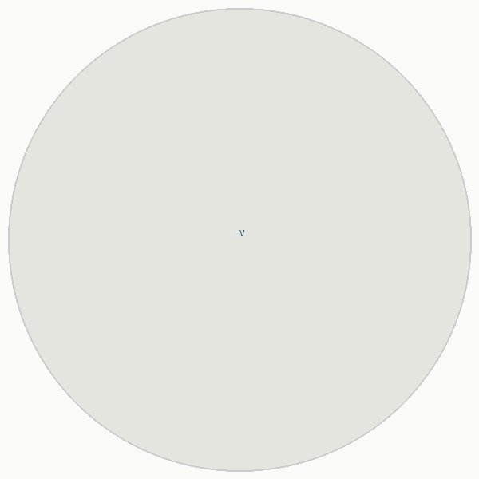

About

Lars van den Berg writes about European institutions, policy, and the ideas that shape the continent's future. Based in Brussels, he has covered EU affairs for over a decade, focusing on the gap between what Brussels decides and what Europe becomes.
His work draws on years of reporting from the Berlaymont and beyond, tracing the long arc of integration, fragmentation, and the quiet machinery that governs both.
Contact
- Email: lars@vandenberg.eu
- Mastodon